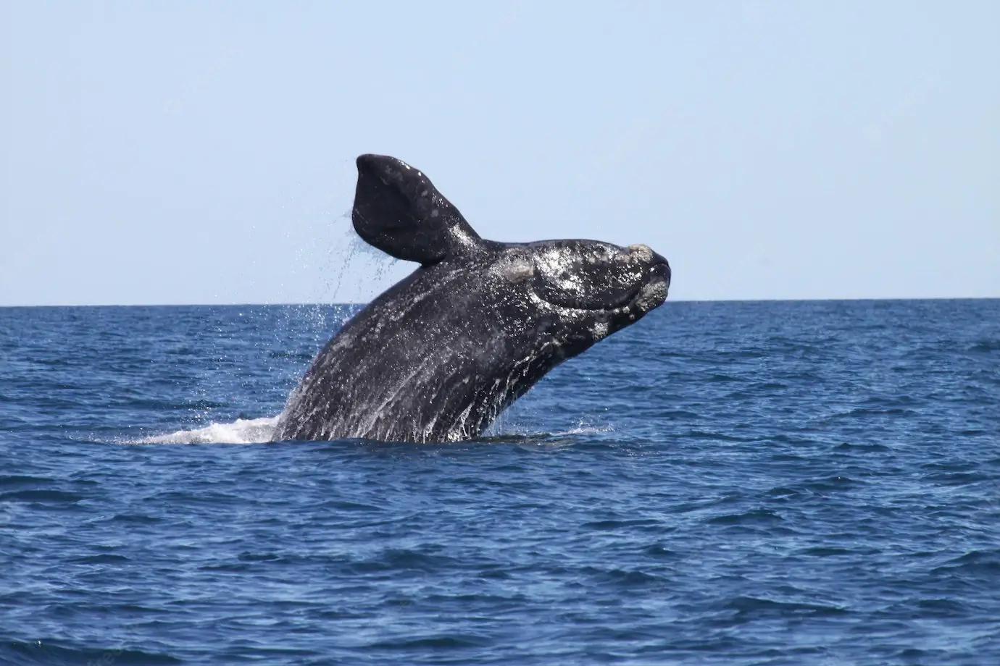

A partir de una donación mensual de AR $500 podés ser parte de la comunidad de «adoptantes de ballenas». Este programa está avalado por más de 50 años de estudios científicos continuos de la población de ballenas francas de la Patagonia Argentina.
Con tu adopción recibirás:
Un Certificado de Adopción con tu nombre y foto de la ballena,
La biografía de la ballena con su registro de observaciones,
La cartilla educativa “Conociendo a la Ballena Franca Austral”,
Una ballena para armar de la Colección cetáceos «Guardabosques»,
Suscripción al Boletín Electrónico bimestral «Noticias francas»,
Y anualmente, continuando con tu donación, recibirás un obsequio digital.
El 100% de tu contribución será destinado a los programas de investigación y educación para la protección de las ballenas y su medioambiente.
Elegí la ballena que vas a adoptar
Vos podés sumarte, eligiendo a una de las ballenas francas que seleccionamos entre más de 4.000 individuos que hemos identificado en las costas de Península Valdés desde 1970. Cada una refleja aspectos representativos de esta población. Cada una tiene su propia historia de vida, única y especial.
CANDELA
ÁMBAR y JOSÉ
LUZ

***Mas allá de la ballena que elijas, lo importante es que estarás aportando tu granito de arena para que entre todos podamos protegerlas en su hogar, los océanos...***